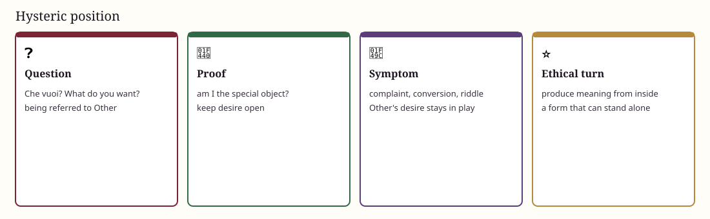

❓ Neurosis · Che vuoi?
❓ The hysteric subject
Organized around: what do you want? What am I for you? 💫 Desire stays alive by not closing the answer.
Not a theatrical personality. Being is referred to the Other’s desire. The gaze object is typical.
